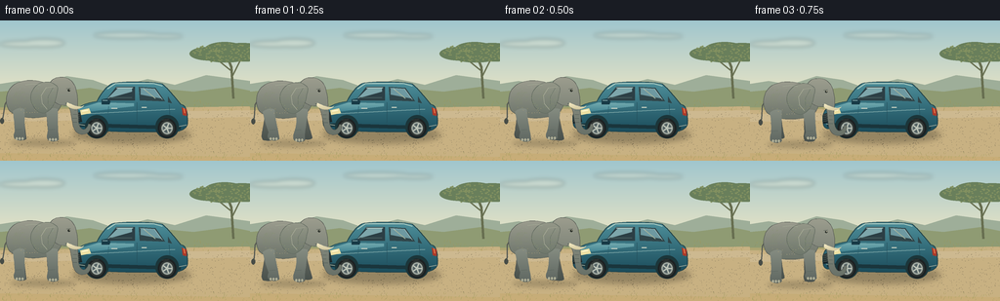
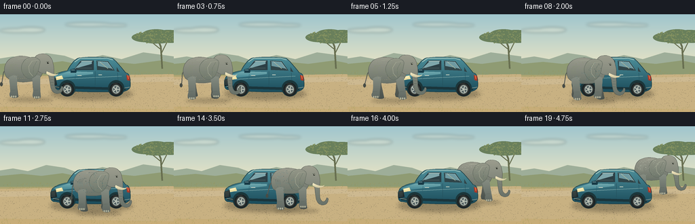

CODING AGENTS AS PIXEL WORLD MODELS
traex/GPT-6.1-Sol · dynamic_spatial_relationship_0065
点击播放 · 原生 RGB 像素
逐轮保存的候选
回放视频、检查图与代码变化。
每份候选均可单独播放。实际图片检查记录在下方工具轨迹中。
候选 01播放与检查图
点击播放 · 原生 RGB 像素


展开代码变化
--- 上一保存版本
+++ 本次保存版本
@@ -0,0 +1,205 @@
+from pathlib import Path
+import math
+import numpy as np
+from PIL import Image, ImageDraw, ImageFilter
+import artifact_io
+
+ROOT=Path(__file__).resolve().parent
+W,H,S=256,144,4
+SIZE=(W*S,H*S)
+
+def pts(p): return [(round(x*S),round(y*S)) for x,y in p]
+def line(im,p,fill,width=1): ImageDraw.Draw(im).line(pts(p),fill=fill,width=max(1,round(width*S)),joint='curve')
+def ellipse(im,b,fill,outline=None,width=1):
+ ImageDraw.Draw(im).ellipse(tuple(round(v*S) for v in b),fill=fill,outline=outline,width=max(1,round(width*S)))
+def polygon(im,p,fill): ImageDraw.Draw(im).polygon(pts(p),fill=fill)
+def bezier(seq):
+ out=[seq[0]]; start=seq[0]
+ for a,b,c in seq[1:]:
+ for t in np.linspace(0,1,15)[1:]:
+ out.append(tuple((1-t)**3*start[j]+3*(1-t)**2*t*a[j]+3*(1-t)*t*t*b[j]+t**3*c[j] for j in [0,1]))
+ start=c
+ return out
+
+def grad_shape(im,p,top,bottom,outline=None,width=.5):
+ mask=Image.new('L',SIZE); polygon(mask,p,255)
+ y0=min(y for x,y in p); y1=max(y for x,y in p)
+ t=np.clip((np.arange(H*S)/S-y0)/max(1,y1-y0),0,1)[:,None,None]
+ arr=np.repeat((np.array(top)[None,None,:]*(1-t)+np.array(bottom)[None,None,:]*t).astype('uint8'),W*S,axis=1)
+ tile=Image.fromarray(arr,'RGB').convert('RGBA'); tile.putalpha(mask)
+ im.alpha_composite(tile)
+ if outline: line(im,p+[p[0]],outline,width)
+
+def shadow(im,b,opacity=60,blur=3):
+ sh=Image.new('RGBA',SIZE); ellipse(sh,b,(47,44,34,opacity)); sh=sh.filter(ImageFilter.GaussianBlur(blur*S)); im.alpha_composite(sh)
+
+rng=np.random.default_rng(12)
+def background():
+ yy=np.arange(H*S)/S
+ rgb=np.zeros((H*S,W*S,3),dtype=np.uint8)
+ for i,y in enumerate(yy):
+ if y<75:
+ t=y/75; a=np.array([160,198,206]); b=np.array([230,227,197]); rgb[i]=a*(1-t)+b*t
+ else:
+ t=(y-75)/69; a=np.array([164,162,111]); b=np.array([202,174,121]); rgb[i]=a*(1-t)+b*t
+ im=Image.fromarray(rgb).convert('RGBA')
+ # Far, hazy clouds and distant hills.
+ cloud=Image.new('RGBA',SIZE)
+ for x,y,rx,ry in [(25,24,25,3),(45,23,21,4),(130,15,34,3),(169,16,18,2)]: ellipse(cloud,(x-rx,y-ry,x+rx,y+ry),(254,246,218,70))
+ im.alpha_composite(cloud.filter(ImageFilter.GaussianBlur(2*S)))
+ polygon(im,[(0,65),(19,62),(41,66),(68,57),(95,61),(117,69),(151,60),(179,66),(211,56),(256,62),(256,81),(0,81)],(158,174,153))
+ polygon(im,[(0,73),(32,70),(61,73),(92,69),(123,75),(166,70),(198,73),(236,68),(256,72),(256,89),(0,89)],(143,155,115))
+ # Flat sandy lane, edged by dry grass.
+ polygon(im,[(0,92),(256,88),(256,140),(0,136)],(200,177,130))
+ polygon(im,[(0,96),(256,92),(256,99),(0,104)],(205,185,144))
+ for i in range(1250):
+ x=rng.uniform(0,256); y=rng.uniform(83,144)
+ if y<94 or y>136:
+ c=(139+int(rng.integers(0,30)),139+int(rng.integers(0,23)),85,130)
+ line(im,[(x,y),(x+rng.uniform(-1.3,1.3),y-rng.uniform(.4,2.5))],c,.3)
+ else:
+ ellipse(im,(x,y,x+rng.uniform(.2,.65),y+.22),(146,131,100,60))
+ # Acacia in the background, kept away from the elephant silhouette.
+ line(im,[(239,80),(237,48),(231,33)],(103,110,80),2.4)
+ line(im,[(237,59),(247,39),(256,33)],(106,113,82),1.4)
+ line(im,[(236,51),(220,38),(209,37)],(105,112,80),1.5)
+ for x,y,rx,ry in [(214,34,20,7),(230,30,21,8),(248,30,24,7),(251,36,21,6),(231,38,22,5)]:
+ ellipse(im,(x-rx,y-ry,x+rx,y+ry),(105,127,91))
+ for i in range(170):
+ x=rng.uniform(194,256); y=rng.uniform(23,42)
+ if ((x-228)/32)**2+((y-33)/10)**2<1: ellipse(im,(x,y,x+2,y+1),(131,145,96,100))
+ return im
+
+def car():
+ im=Image.new('RGBA',SIZE)
+ # Stationary SUV pointing to screen left.
+ shadow(im,(74,108,195,126),85,3)
+ # Far-side wheels.
+ ellipse(im,(87,95,105,117),(35,40,39)); ellipse(im,(164,95,182,117),(35,40,39))
+ body=bezier([(75,106),((74,103),(74,94),(78,91)),((84,86),(92,84),(99,83)),((106,70),(113,64),(118,64)),((134,62),(158,63),(166,65)),((174,72),(180,80),(185,86)),((191,87),(192,94),(192,105)),((192,109),(188,113),(180,114)),((139,115),(96,114),(80,111)),((77,111),(75,109),(75,106))])
+ grad_shape(im,body,(78,143,154),(27,76,91),(33,64,70),.7)
+ # Roof highlights and window bevels.
+ line(im,[(110,70),(118,64.5),(157,64.5),(166,67)],(172,201,190),1)
+ polygon(im,[(108,82),(119,68),(138,68),(138,82)],(44,63,69))
+ polygon(im,[(142,68),(159,69),(169,83),(143,82)],(48,69,73))
+ polygon(im,[(172,78),(176,85),(172,84)],(48,69,73))
+ polygon(im,[(110,80),(121,69),(135,69),(135,73)],(126,166,171))
+ polygon(im,[(144,69),(158,70),(165,80),(144,76)],(110,153,161))
+ line(im,[(119,69),(136,69)],(188,208,199),.65)
+ line(im,[(143,69),(158,70),(166,81)],(164,192,190),.6)
+ # Window reflection, faint dashboard.
+ line(im,[(112,79),(135,79)],(69,90,90),1.1)
+ line(im,[(147,70),(159,80)],(188,204,196,120),.75)
+ # Hood and long panel.
+ grad_shape(im,[(78,91),(101,84),(137,85),(137,88),(87,94)],(115,170,175),(65,131,145))
+ line(im,[(83,96),(179,91)],(146,184,181),.7)
+ line(im,[(140,84),(140,105)],(36,79,91),.6)
+ line(im,[(173,86),(174,103)],(36,79,91),.6)
+ line(im,[(111,88),(110,104)],(43,94,107),.6)
+ # Door handles and mirror.
+ line(im,[(145,89),(150,89)],(211,216,197),1.1)
+ line(im,[(114,90),(120,90)],(208,214,197),1)
+ polygon(im,[(104,81),(109,80),(113,83),(112,86),(104,86)],(24,59,71))
+ line(im,[(105,82),(110,82)],(147,183,184),.7)
+ # Front grille, luminous headlight; rear lamps.
+ grad_shape(im,[(75,96),(82,94),(84,104),(75,106)],(45,55,53),(24,37,42))
+ for y in [97,99,101,103]: line(im,[(75.6,y),(81,y-.6)],(153,161,148),.55)
+ polygon(im,[(82,92),(91,90),(93,95),(83,97)],(237,224,163))
+ line(im,[(84,93),(90,92)],(255,249,212),1.2)
+ polygon(im,[(186,89),(191,91),(191,98),(187,97)],(167,57,42))
+ line(im,[(188,90),(189,95)],(241,128,75),1)
+ line(im,[(79,107),(185,110)],(26,53,60),4)
+ line(im,[(78,106),(91,108)],(152,165,151),1.1)
+ line(im,[(181,109),(191,107)],(145,157,146),1.1)
+ # Wheel arches and wheels with rubber, rims, bolt detail.
+ for x,y in [(99,110),(171,110)]:
+ ellipse(im,(x-12,y-13,x+12,y+11),(27,54,58))
+ ellipse(im,(x-9.5,y-9.5,x+9.5,y+10.5),(29,34,35))
+ ellipse(im,(x-7.5,y-7.5,x+7.5,y+8.5),(50,56,54))
+ ellipse(im,(x-5.7,y-5.7,x+5.7,y+6.7),(158,167,159))
+ ellipse(im,(x-4.3,y-4.3,x+4.3,y+5.3),(85,99,101))
+ for a in np.linspace(0,2*math.pi,6)[:-1]:
+ line(im,[(x,y+.4),(x+5*math.cos(a),y+.4+5*math.sin(a))],(195,200,186),1.25)
+ ellipse(im,(x-1.6,y-1.2,x+1.6,y+2),(184,192,181))
+ line(im,[(x-5,y-8),(x+2,y-9)],(93,101,94),.6)
+ return im
+
+def elephant(cx,ground,scale,phase,walking=1):
+ im=Image.new('RGBA',SIZE)
+ def tr(p): return [(cx+x*scale,ground+y*scale) for x,y in p]
+ def el(b,c,outline=None,w=.5): ellipse(im,(cx+b[0]*scale,ground+b[1]*scale,cx+b[2]*scale,ground+b[3]*scale),c,outline,w*scale)
+ def li(p,c,w=.5): line(im,tr(p),c,w*scale)
+ def shape(seq,a,b,o=(82,86,81),w=.45): grad_shape(im,tr(bezier(seq)),a,b,o,w*scale)
+ # Tail: thin, gently swinging, with a dark tuft.
+ sway=1.8*math.sin(phase*.7)
+ li([(-27,-48),(-33,-38),(-35+sway,-25),(-36+sway,-22)],(88,91,84),1.25)
+ el((-38+sway,-24,-34+sway,-18),(71,76,70))
+ # Far legs, then torso. Knees flex and planted feet remain grounded.
+ for x,off in [(-18,math.pi),(15,0)]:
+ q=math.sin(phase+off)*walking; step=4*q; lift=2.8*max(0,math.cos(phase+off))*walking
+ shape([(x-5,-32),((x-5,-24),(x-5+step*.4,-18),(x-4+step,-11)),((x-5+step,-7-lift),(x-5+step,-3-lift),(x-3+step,-2-lift)),((x+1+step,-1-lift),(x+6+step,-1-lift),(x+7+step,-3-lift)),((x+6+step,-10),(x+4,-23),(x+5,-33)),((x+2,-35),(x-2,-34),(x-5,-32))],(108,111,102),(73,81,76))
+ shape([(-29,-32),((-35,-43),(-30,-58),(-18,-61)),((-7,-65),(10,-62),(21,-54)),((29,-47),(25,-31),(16,-27)),((1,-22),(-22,-23),(-29,-32))],(155,156,142),(107,115,105))
+ # Broad near legs with a natural taper and rounded toenails.
+ for x,off in [(-19,0),(15,math.pi)]:
+ q=math.sin(phase+off)*walking; step=4.4*q; lift=3*max(0,math.cos(phase+off))*walking
+ shape([(x-6,-31),((x-5,-24),(x-4+step*.35,-16),(x-4+step,-10)),((x-5+step,-7-lift),(x-6+step,-2-lift),(x-3+step,-1-lift)),((x+1+step,1-lift),(x+6+step,0-lift),(x+7+step,-2-lift)),((x+6+step,-10),(x+6,-25),(x+6,-33)),((x+2,-35),(x-2,-34),(x-6,-31))],(133,140,129),(95,103,97),None)
+ li([(x-3+step,-12),(x+3+step,-12.5)],(83,96,88),.45)
+ li([(x-3+step,-10.2),(x+3+step,-10.5)],(101,111,102),.4)
+ for z in [-2,1,4]: el((x+step+z-1,-3.2-lift,x+step+z+1,-.4-lift),(176,176,152))
+ # Neck and head, domed forehead and long trunk in one connected form.
+ trunk_swing=1.4*math.sin(phase+.4)
+ shape([(12,-49),((10,-57),(14,-66),(23,-66)),((33,-67),(39,-60),(40,-51)),((42,-45),(41,-38),(41+trunk_swing,-31)),((42+trunk_swing,-23),(40+trunk_swing,-17),(45+trunk_swing,-13)),((48+trunk_swing,-11),(51+trunk_swing,-14),(52+trunk_swing,-18)),((56+trunk_swing,-19),(54+trunk_swing,-10),(50+trunk_swing,-8)),((44+trunk_swing,-5),(37+trunk_swing,-9),(36+trunk_swing,-18)),((34+trunk_swing,-27),(35,-33),(31,-37)),((22,-36),(17,-39),(12,-49))],(156,157,142),(104,113,104))
+ # Ear, folded like an asymmetric broad fan.
+ ear=1.4*math.sin(phase*.65)
+ shape([(20,-57),((12,-64),(-1,-61),(-5-ear,-52)),((-10-ear,-44),(-4-ear,-30),(6,-29)),((14,-30),(19,-39),(20,-48)),((21,-52),(22,-55),(20,-57))],(148,151,136),(111,120,108),(91,101,91),.55)
+ li([(18,-56),(9,-55),(4,-47),(5,-39),(10,-33)],(173,175,154),.6)
+ li([(16,-55),(11,-46),(11,-37)],(105,115,103),.6)
+ # Fine shoulder wrinkles and skin contour, not cartoon outlines.
+ for j in range(4):
+ li([(-21+j*2,-51),(-25+j*2,-45),(-24+j*2,-38)],(108,118,105,100),.32)
+ for j in range(5):
+ y=-36+j*4
+ li([(36+trunk_swing*.5,y),(40+trunk_swing,y+.3)],(81,94,85,155),.45)
+ li([(-12,-58),(-4,-59),(3,-58)],(182,181,156,120),.6)
+ # Calm small eye, eyebrow, mouth, and ivory tusk.
+ li([(30,-54),(34,-54.5)],(97,104,93),.7)
+ el((31.3,-53.4,33.8,-51.3),(34,40,35))
+ el((32.7,-53.1,33.4,-52.4),(235,225,190))
+ li([(29,-39),(34,-38)],(73,87,76),.65)
+ shape([(31,-40),((37,-37),(44,-34),(48,-37)),((45,-32),(36,-32),(31,-36)),((30,-37),(30,-39),(31,-40))],(248,237,197),(209,199,159),None)
+ # Small mottling on body, fixed in elephant-local coordinates.
+ localrng=np.random.default_rng(43)
+ for i in range(95):
+ x=localrng.uniform(-28,19); y=localrng.uniform(-59,-28)
+ if ((x+5)/26)**2+((y+44)/17)**2<1:
+ el((x,y,x+.4,y+.3),(80,96,81,40))
+ return im
+
+
+def main():
+ bg=background(); vehicle=car(); frames=[]
+ for i in range(20):
+ t=i/19
+ # Advance from the front bumper, along the visible side, then around the rear.
+ u=max(0,min(1,(t-.04)/.9)); smooth=u*u*(3-2*u)
+ cx=38+157*smooth
+ turn=max(0,min(1,(t-.67)/.30)); turn=turn*turn*(3-2*turn)
+ ground=124+3*math.sin(math.pi*u)-23*turn
+ scale=1-.12*turn
+ amp=1 if 1<=i<=17 else (.35 if i==0 else .25)
+ phase=i*1.12
+ ground+=.45*math.sin(phase*2)*amp
+ im=bg.copy()
+ shadow(im,(cx-28*scale,ground-2,cx+40*scale,ground+5),60,2.3)
+ ele=elephant(cx,ground,scale,phase,amp)
+ if i<15:
+ im.alpha_composite(vehicle); im.alpha_composite(ele)
+ else:
+ # On the far side: the car correctly hides the elephant's rear legs and body.
+ im.alpha_composite(ele); im.alpha_composite(vehicle)
+ # Subtle warm grade and antialiasing.
+ out=im.convert('RGB').resize((W,H),Image.Resampling.LANCZOS)
+ frames.append(np.array(out,dtype=np.uint8))
+ artifact_io.save(np.stack(frames),ROOT)
+
+if __name__=='__main__': main()
可观测工具轨迹
实际执行的命令与返回图片。
命令 1exit 0
/bin/bash -lc "ls -la && cat prompt.txt && printf '\\n---RULES---\\n' && cat GENERATION_RULES.md && printf '\\n---SPEC---\\n' && cat task_spec.json"
命令 2exit 1
/bin/bash -lc "cat artifact_io.py && which ffmpeg && python - <<'PY'
import PIL,numpy
print('PIL and numpy ready')
PY"命令 3exit 0
/bin/bash -lc "python - <<'PY' import PIL,numpy print(PIL.__version__) PY"
命令 4exit 0
/bin/bash -lc "cat > generate.py <<'PY'
from pathlib import Path
import math
import numpy as np
from PIL import Image, ImageDraw, ImageFilter
import artifact_io
ROOT=Path(__file__).resolve().parent
W,H,S=256,144,4
SIZE=(W*S,H*S)
def pts(p): return [(round(x*S),round(y*S)) for x,y in p]
def line(im,p,fill,width=1): ImageDraw.Draw(im).line(pts(p),fill=fill,width=max(1,round(width*S)),joint='curve')
def ellipse(im,b,fill,outline=None,width=1):
ImageDraw.Draw(im).ellipse(tuple(round(v*S) for v in b),fill=fill,outline=outline,width=max(1,round(width*S)))
def polygon(im,p,fill): ImageDraw.Draw(im).polygon(pts(p),fill=fill)
def bezier(seq):
out=[seq[0]]; start=seq[0]
for a,b,c in seq[1:]:
for t in np.linspace(0,1,15)[1:]:
out.append(tuple((1-t)**3*start[j]+3*(1-t)**2*t*a[j]+3*(1-t)*t*t*b[j]+t**3*c[j] for j in [0,1]))
start=c
return out
def grad_shape(im,p,top,bottom,outline=None,width=.5):
mask=Image.new('L',SIZE); polygon(mask,p,255)
y0=min(y for x,y in p); y1=max(y for x,y in p)
t=np.clip((np.arange(H*S)/S-y0)/max(1,y1-y0),0,1)[:,None,None]
arr=np.repeat((np.array(top)[None,None,:]*(1-t)+np.array(bottom)[None,None,:]*t).astype('uint8'),W*S,axis=1)
tile=Image.fromarray(arr,'RGB').convert('RGBA'); tile.putalpha(mask)
im.alpha_composite(tile)
if outline: line(im,p+[p[0]],outline,width)
def shadow(im,b,opacity=60,blur=3):
sh=Image.new('RGBA',SIZE); ellipse(sh,b,(47,44,34,opacity)); sh=sh.filter(ImageFilter.GaussianBlur(blur*S)); im.alpha_composite(sh)
rng=np.random.default_rng(12)
def background():
yy=np.arange(H*S)/S
rgb=np.zeros((H*S,W*S,3),dtype=np.uint8)
for i,y in enumerate(yy):
if y<75:
t=y/75; a=np.array([160,198,206]); b=np.array([230,227,197]); rgb[i]=a*(1-t)+b*t
else:
t=(y-75)/69; a=np.array([164,162,111]); b=np.array([202,174,121]); rgb[i]=a*(1-t)+b*t
im=Image.fromarray(rgb).convert('RGBA')
# Far, hazy clouds and distant hills.
cloud=Image.new('RGBA',SIZE)
for x,y,rx,ry in [(25,24,25,3),(45,23,21,4),(130,15,34,3),(169,16,18,2)]: ellipse(cloud,(x-rx,y-ry,x+rx,y+ry),(254,246,218,70))
im.alpha_composite(cloud.filter(ImageFilter.GaussianBlur(2*S)))
polygon(im,[(0,65),(19,62),(41,66),(68,57),(95,61),(117,69),(151,60),(179,66),(211,56),(256,62),(256,81),(0,81)],(158,174,153))
polygon(im,[(0,73),(32,70),(61,73),(92,69),(123,75),(166,70),(198,73),(236,68),(256,72),(256,89),(0,89)],(143,155,115))
# Flat sandy lane, edged by dry grass.
polygon(im,[(0,92),(256,88),(256,140),(0,136)],(200,177,130))
polygon(im,[(0,96),(256,92),(256,99),(0,104)],(205,185,144))
for i in range(1250):
x=rng.uniform(0,256); y=rng.uniform(83,144)
if y<94 or y>136:
c=(139+int(rng.integers(0,30)),139+int(rng.integers(0,23)),85,130)
line(im,[(x,y),(x+rng.uniform(-1.3,1.3),y-rng.uniform(.4,2.5))],c,.3)
else:
ellipse(im,(x,y,x+rng.uniform(.2,.65),y+.22),(146,131,100,60))
# Acacia in the background, kept away from the elephant silhouette.
line(im,[(239,80),(237,48),(231,33)],(103,110,80),2.4)
line(im,[(237,59),(247,39),(256,33)],(106,113,82),1.4)
line(im,[(236,51),(220,38),(209,37)],(105,112,80),1.5)
for x,y,rx,ry in [(214,34,20,7),(230,30,21,8),(248,30,24,7),(251,36,21,6),(231,38,22,5)]:
ellipse(im,(x-rx,y-ry,x+rx,y+ry),(105,127,91))
for i in range(170):
x=rng.uniform(194,256); y=rng.uniform(23,42)
if ((x-228)/32)**2+((y-33)/10)**2<1: ellipse(im,(x,y,x+2,y+1),(131,145,96,100))
return im
def car():
im=Image.new('RGBA',SIZE)
# Stationary SUV pointing to screen left.
shadow(im,(74,108,195,126),85,3)
# Far-side wheels.
ellipse(im,(87,95,105,117),(35,40,39)); ellipse(im,(164,95,182,117),(35,40,39))
body=bezier([(75,106),((74,103),(74,94),(78,91)),((84,86),(92,84),(99,83)),((106,70),(113,64),(118,64)),((134,62),(158,63),(166,65)),((174,72),(180,80),(185,86)),((191,87),(192,94),(192,105)),((192,109),(188,113),(180,114)),((139,115),(96,114),(80,111)),((77,111),(75,109),(75,106))])
grad_shape(im,body,(78,143,154),(27,76,91),(33,64,70),.7)
# Roof highlights and window bevels.
line(im,[(110,70),(118,64.5),(157,64.5),(166,67)],(172,201,190),1)
polygon(im,[(108,82),(119,68),(138,68),(138,82)],(44,63,69))
polygon(im,[(142,68),(159,69),(169,83),(143,82)],(48,69,73))
polygon(im,[(172,78),(176,85),(172,84)],(48,69,73))
polygon(im,[(110,80),(121,69),(135,69),(135,73)],(126,166,171))
polygon(im,[(144,69),(158,70),(165,80),(144,76)],(110,153,161))
line(im,[(119,69),(136,69)],(188,208,199),.65)
line(im,[(143,69),(158,70),(166,81)],(164,192,190),.6)
# Window reflection, faint dashboard.
line(im,[(112,79),(135,79)],(69,90,90),1.1)
line(im,[(147,70),(159,80)],(188,204,196,120),.75)
# Hood and long panel.
grad_shape(im,[(78,91),(101,84),(137,85),(137,88),(87,94)],(115,170,175),(65,131,145))
line(im,[(83,96),(179,91)],(146,184,181),.7)
line(im,[(140,84),(140,105)],(36,79,91),.6)
line(im,[(173,86),(174,103)],(36,79,91),.6)
line(im,[(111,88),(110,104)],(43,94,107),.6)
# Door handles and mirror.
line(im,[(145,89),(150,89)],(211,216,197),1.1)
line(im,[(114,90),(120,90)],(208,214,197),1)
polygon(im,[(104,81),(109,80),(113,83),(112,86),(104,86)],(24,59,71))
line(im,[(105,82),(110,82)],(147,183,184),.7)
# Front grille, luminous headlight; rear lamps.
grad_shape(im,[(75,96),(82,94),(84,104),(75,106)],(45,55,53),(24,37,42))
for y in [97,99,101,103]: line(im,[(75.6,y),(81,y-.6)],(153,161,148),.55)
polygon(im,[(82,92),(91,90),(93,95),(83,97)],(237,224,163))
line(im,[(84,93),(90,92)],(255,249,212),1.2)
polygon(im,[(186,89),(191,91),(191,98),(187,97)],(167,57,42))
line(im,[(188,90),(189,95)],(241,128,75),1)
line(im,[(79,107),(185,110)],(26,53,60),4)
line(im,[(78,106),(91,108)],(152,165,151),1.1)
line(im,[(181,109),(191,107)],(145,157,146),1.1)
# Wheel arches and wheels with rubber, rims, bolt detail.
for x,y in [(99,110),(171,110)]:
ellipse(im,(x-12,y-13,x+12,y+11),(27,54,58))
ellipse(im,(x-9.5,y-9.5,x+9.5,y+10.5),(29,34,35))
ellipse(im,(x-7.5,y-7.5,x+7.5,y+8.5),(50,56,54))
ellipse(im,(x-5.7,y-5.7,x+5.7,y+6.7),(158,167,159))
ellipse(im,(x-4.3,y-4.3,x+4.3,y+5.3),(85,99,101))
for a in np.linspace(0,2*math.pi,6)[:-1]:
line(im,[(x,y+.4),(x+5*math.cos(a),y+.4+5*math.sin(a))],(195,200,186),1.25)
ellipse(im,(x-1.6,y-1.2,x+1.6,y+2),(184,192,181))
line(im,[(x-5,y-8),(x+2,y-9)],(93,101,94),.6)
return im
def elephant(cx,ground,scale,phase,walking=1):
im=Image.new('RGBA',SIZE)
def tr(p): return [(cx+x*scale,ground+y*scale) for x,y in p]
def el(b,c,outline=None,w=.5): ellipse(im,(cx+b[0]*scale,ground+b[1]*scale,cx+b[2]*scale,ground+b[3]*scale),c,outline,w*scale)
def li(p,c,w=.5): line(im,tr(p),c,w*scale)
def shape(seq,a,b,o=(82,86,81),w=.45): grad_shape(im,tr(bezier(seq)),a,b,o,w*scale)
# Tail: thin, gently swinging, with a dark tuft.
sway=1.8*math.sin(phase*.7)
li([(-27,-48),(-33,-38),(-35+sway,-25),(-36+sway,-22)],(88,91,84),1.25)
el((-38+sway,-24,-34+sway,-18),(71,76,70))
# Far legs, then torso. Knees flex and planted feet remain grounded.
for x,off in [(-18,math.pi),(15,0)]:
q=math.sin(phase+off)*walking; step=4*q; lift=2.8*max(0,math.cos(phase+off))*walking
shape([(x-5,-32),((x-5,-24),(x-5+step*.4,-18),(x-4+step,-11)),((x-5+step,-7-lift),(x-5+step,-3-lift),(x-3+step,-2-lift)),((x+1+step,-1-lift),(x+6+step,-1-lift),(x+7+step,-3-lift)),((x+6+step,-10),(x+4,-23),(x+5,-33)),((x+2,-35),(x-2,-34),(x-5,-32))],(108,111,102),(73,81,76))
shape([(-29,-32),((-35,-43),(-30,-58),(-18,-61)),((-7,-65),(10,-62),(21,-54)),((29,-47),(25,-31),(16,-27)),((1,-22),(-22,-23),(-29,-32))],(155,156,142),(107,115,105))
# Broad near legs with a natural taper and rounded toenails.
for x,off in [(-19,0),(15,math.pi)]:
q=math.sin(phase+off)*walking; step=4.4*q; lift=3*max(0,math.cos(phase+off))*walking
shape([(x-6,-31),((x-5,-24),(x-4+step*.35,-16),(x-4+step,-10)),((x-5+step,-7-lift),(x-6+step,-2-lift),(x-3+step,-1-lift)),((x+1+step,1-lift),(x+6+step,0-lift),(x+7+step,-2-lift)),((x+6+step,-10),(x+6,-25),(x+6,-33)),((x+2,-35),(x-2,-34),(x-6,-31))],(133,140,129),(95,103,97),None)
li([(x-3+step,-12),(x+3+step,-12.5)],(83,96,88),.45)
li([(x-3+step,-10.2),(x+3+step,-10.5)],(101,111,102),.4)
for z in [-2,1,4]: el((x+step+z-1,-3.2-lift,x+step+z+1,-.4-lift),(176,176,152))
# Neck and head, domed forehead and long trunk in one connected form.
trunk_swing=1.4*math.sin(phase+.4)
shape([(12,-49),((10,-57),(14,-66),(23,-66)),((33,-67),(39,-60),(40,-51)),((42,-45),(41,-38),(41+trunk_swing,-31)),((42+trunk_swing,-23),(40+trunk_swing,-17),(45+trunk_swing,-13)),((48+trunk_swing,-11),(51+trunk_swing,-14),(52+trunk_swing,-18)),((56+trunk_swing,-19),(54+trunk_swing,-10),(50+trunk_swing,-8)),((44+trunk_swing,-5),(37+trunk_swing,-9),(36+trunk_swing,-18)),((34+trunk_swing,-27),(35,-33),(31,-37)),((22,-36),(17,-39),(12,-49))],(156,157,142),(104,113,104))
# Ear, folded like an asymmetric broad fan.
ear=1.4*math.sin(phase*.65)
shape([(20,-57),((12,-64),(-1,-61),(-5-ear,-52)),((-10-ear,-44),(-4-ear,-30),(6,-29)),((14,-30),(19,-39),(20,-48)),((21,-52),(22,-55),(20,-57))],(148,151,136),(111,120,108),(91,101,91),.55)
li([(18,-56),(9,-55),(4,-47),(5,-39),(10,-33)],(173,175,154),.6)
li([(16,-55),(11,-46),(11,-37)],(105,115,103),.6)
# Fine shoulder wrinkles and skin contour, not cartoon outlines.
for j in range(4):
li([(-21+j*2,-51),(-25+j*2,-45),(-24+j*2,-38)],(108,118,105,100),.32)
for j in range(5):
y=-36+j*4
li([(36+trunk_swing*.5,y),(40+trunk_swing,y+.3)],(81,94,85,155),.45)
li([(-12,-58),(-4,-59),(3,-58)],(182,181,156,120),.6)
# Calm small eye, eyebrow, mouth, and ivory tusk.
li([(30,-54),(34,-54.5)],(97,104,93),.7)
el((31.3,-53.4,33.8,-51.3),(34,40,35))
el((32.7,-53.1,33.4,-52.4),(235,225,190))
li([(29,-39),(34,-38)],(73,87,76),.65)
shape([(31,-40),((37,-37),(44,-34),(48,-37)),((45,-32),(36,-32),(31,-36)),((30,-37),(30,-39),(31,-40))],(248,237,197),(209,199,159),None)
# Small mottling on body, fixed in elephant-local coordinates.
localrng=np.random.default_rng(43)
for i in range(95):
x=localrng.uniform(-28,19); y=localrng.uniform(-59,-28)
if ((x+5)/26)**2+((y+44)/17)**2<1:
el((x,y,x+.4,y+.3),(80,96,81,40))
return im
def main():
bg=background(); vehicle=car(); frames=[]
for i in range(20):
t=i/19
# Advance from the front bumper, along the visible side, then around the rear.
u=max(0,min(1,(t-.04)/.9)); smooth=u*u*(3-2*u)
cx=38+157*smooth
turn=max(0,min(1,(t-.67)/.30)); turn=turn*turn*(3-2*turn)
ground=124+3*math.sin(math.pi*u)-23*turn
scale=1-.12*turn
amp=1 if 1<=i<=17 else (.35 if i==0 else .25)
phase=i*1.12
ground+=.45*math.sin(phase*2)*amp
im=bg.copy()
shadow(im,(cx-28*scale,ground-2,cx+40*scale,ground+5),60,2.3)
ele=elephant(cx,ground,scale,phase,amp)
if i<15:
im.alpha_composite(vehicle); im.alpha_composite(ele)
else:
# On the far side: the car correctly hides the elephant's rear legs and body.
im.alpha_composite(ele); im.alpha_composite(vehicle)
# Subtle warm grade and antialiasing.
out=im.convert('RGB').resize((W,H),Image.Resampling.LANCZOS)
frames.append(np.array(out,dtype=np.uint8))
artifact_io.save(np.stack(frames),ROOT)
if __name__=='__main__': main()
PY
python generate.py"命令 5exit 0
/bin/bash -lc "python - <<'PY'
from pathlib import Path
import numpy as np
from PIL import Image
p=Path('.')
a=np.load(p/'pixels.npz')['pixels']
print('Saved RGB video:',len(list((p/'frames').glob('*.png'))),'frames')
print('Packed shape:',a.shape)
print('Frame mode and dimensions:',Image.open(p/'frames/00.png').mode,Image.open(p/'frames/00.png').size)
for f in ['generate.py','pixels.npz','index.html','inspection.png','transition_check.png']:
print(f, (p/f).stat().st_size,'bytes')
PY"视觉工具实际返回图片 1

保存候选 1 份；完成命令 5 次；可验证图片返回 1 张。原始 API 响应与完整日志保留在本地。